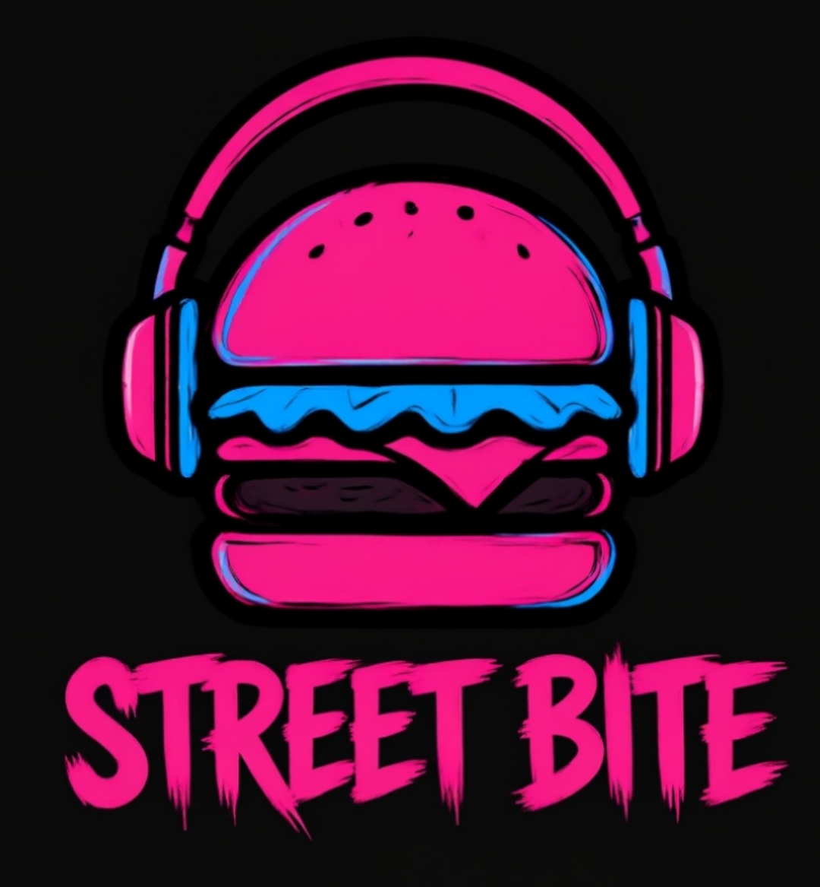
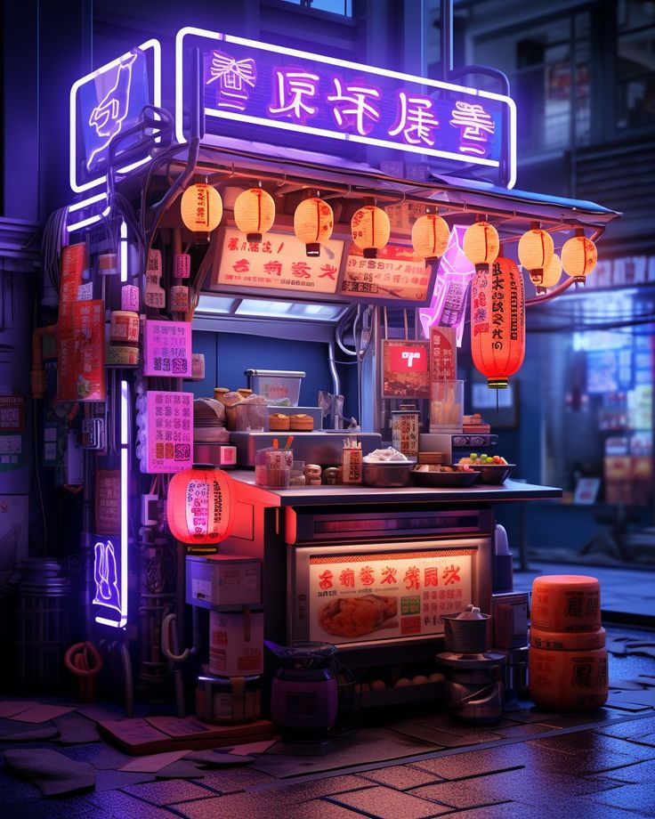
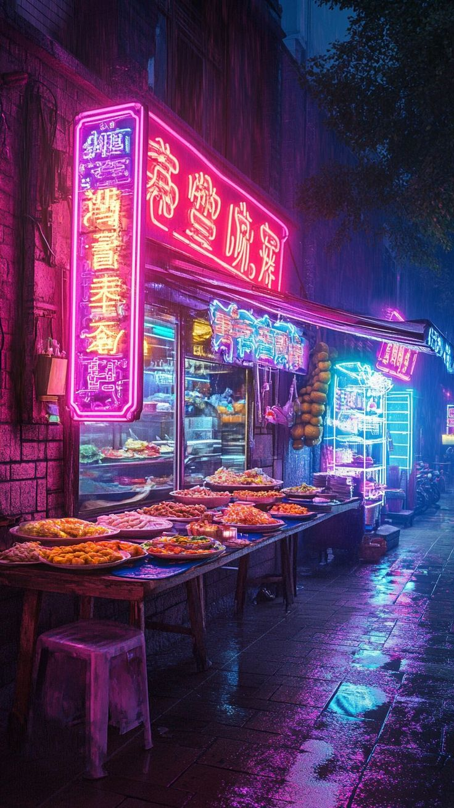
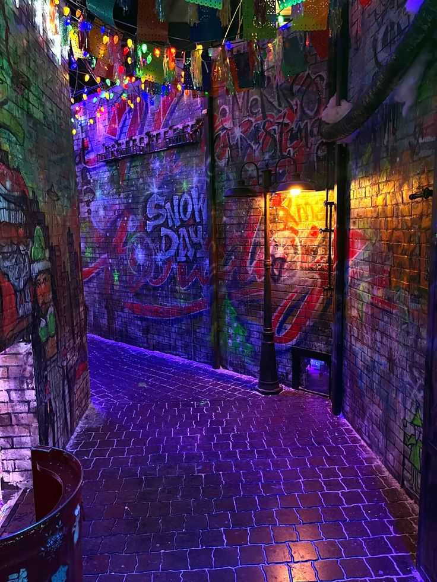
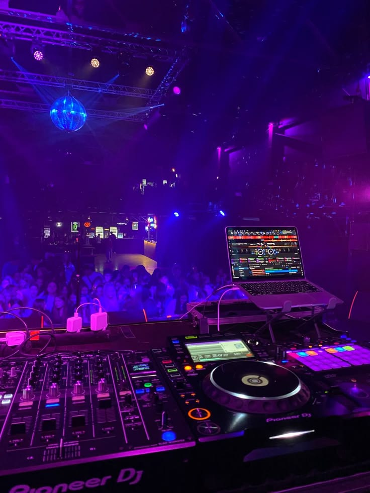
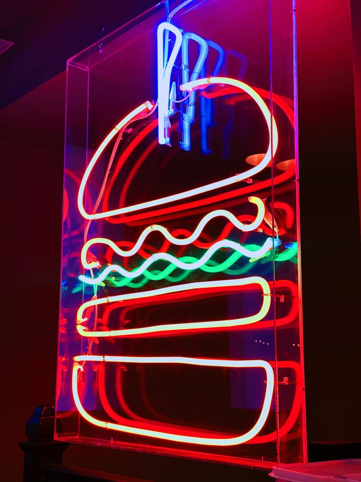
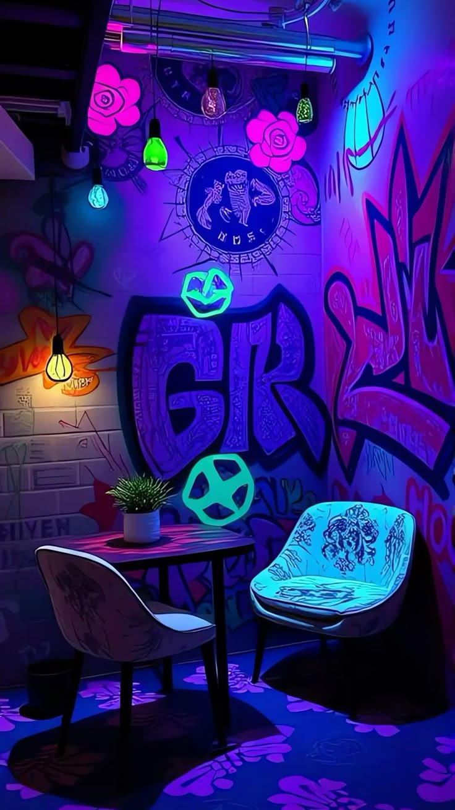

01. ИДЕЯ И НАСТРОЕНИЕ
«Вкус улиц» — это драйв, аппетит и свобода. Фестиваль объединяет еду, ночную жизнь и современную музыку.
Драйв
Неон, ритм, скорость
Аппетит
Сочный стрит-фуд
Свобода
Уличная культура
Проект выполнила: Екатерина Семенова | Группа 209-O2
Листай вниз или нажимай стрелки ⬇️
«Вкус улиц» — это драйв, аппетит и свобода. Фестиваль объединяет еду, ночную жизнь и современную музыку.
Неон, ритм, скорость
Сочный стрит-фуд
Уличная культура
Логотип сочетает в себе два главный символа фестиваля:сочный бургер накладные наушники. Наушники надеты прямо на бургер, создавая образ "вкуса музыки" и уличного драйва. Знак отлично смотрится на футболках, стаканах и вывесках.

Векторный стиль, неон, граффити-вайб






Шрифты: Anton (заголовки) и Montserrat (текст).
«Вкус улиц» — это энергия города.
Дизайн простой, дружелюбный и запоминающийся.